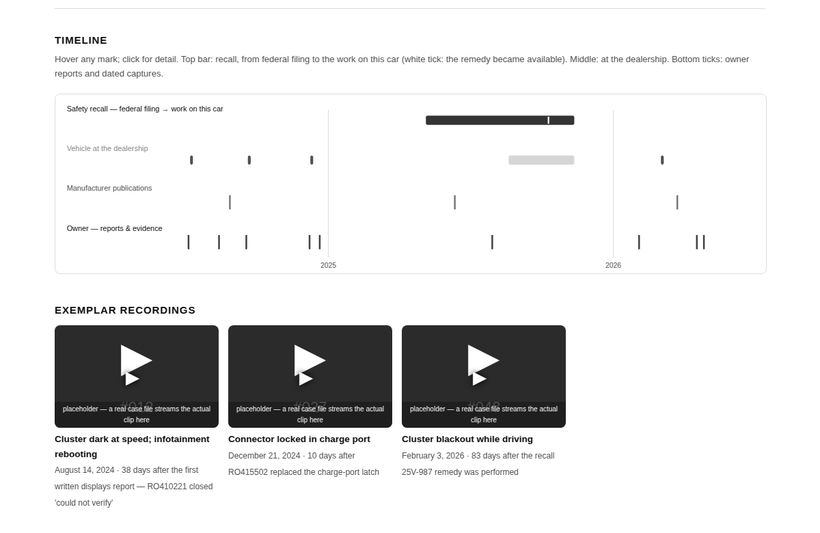
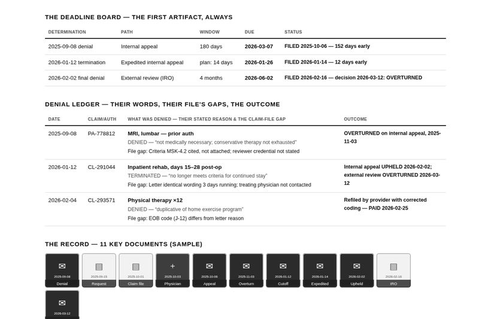
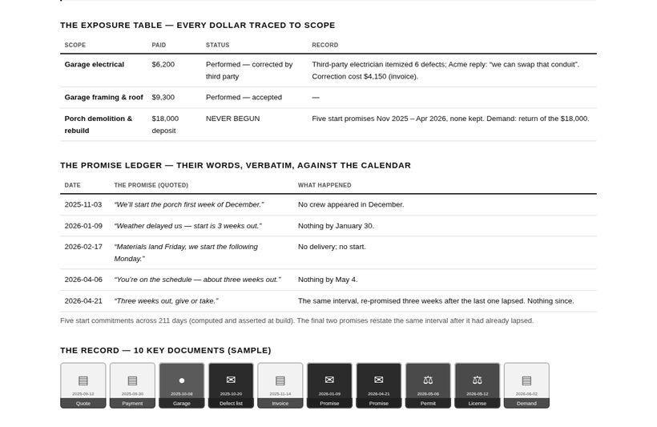

Free, open methods and AI prompts for building a professional-grade case file: the dated, verified, quote-them-verbatim paper record that wins reviews, appeals, and disputes — or hands your lawyer a running start. Developed inside a real self-represented case; everything specific removed, everything repeatable kept.
Each method produces a working case file. The demonstrations below are fully fictional, but the shape is the real product: the ledger of what they did in their own words, the timeline, the evidence grid, every document one click away.



One source of truth: every artifact is generated from a single catalogue, and every number is computed and asserted at build time. A document proves only what it shows. Quote them verbatim. Curate ruthlessly; never omit what would make you look dishonest.
The counterparty-file principle: whoever decided against you assembled a file to do it — request it before you argue with it.
Adversarial review before sending: have your own case attacked from the other side's perspectives, and fix what the hostile reading finds. State facts. The record argues by existing.
Every method improves when someone runs it. Prompt fixes
from real use, per-jurisdiction signpost files (dated and cited — see any repo's
jurisdictions/), and anonymized outcomes are the contributions that
compound. Real case documents are never accepted: the repositories stay 100%
synthetic. New domains are welcome where the fitness test holds — disputes decided
on paper, with a records right, a deadline ladder, and many unrepresented people
losing by default. Questions, anonymized outcomes, and offers of help:
mailbox@buildtherecord.org.
An hour of a practitioner’s time is the
highest-leverage contribution this project can receive. What helps most: reviewing a
method for anything that could mislead a layperson in your jurisdiction; a
jurisdictions/ signpost file for your state — statutes, deadline rules,
bodies, cited, no advice; telling us where a prompt should say stop — get
counsel now; and pointing at the legal-aid and pro-bono channels in your area that
actually answer. Everything is public under Apache-2.0. Nothing here creates an
attorney-client relationship, and we will never present a contribution as an
endorsement of any individual claim.